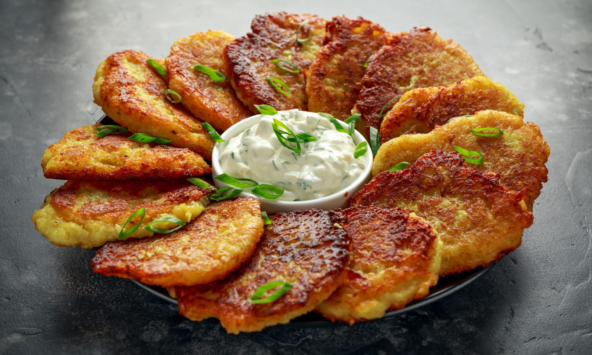

Драники — блюдо белорусской кухни, которое готовят из тёртого картофеля, смешанного с яйцом и мукой, а затем обжаривают на масле до золотистого цвета.
Для драников не подходит молодой картофель, поскольку он не очень крахмалистый и картофельные оладьи могут расползтись или пригореть.